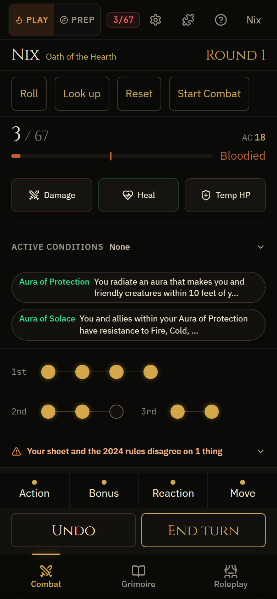
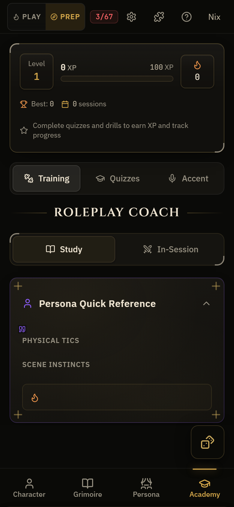
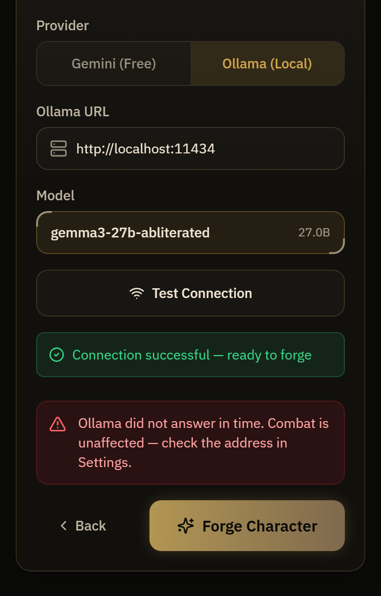
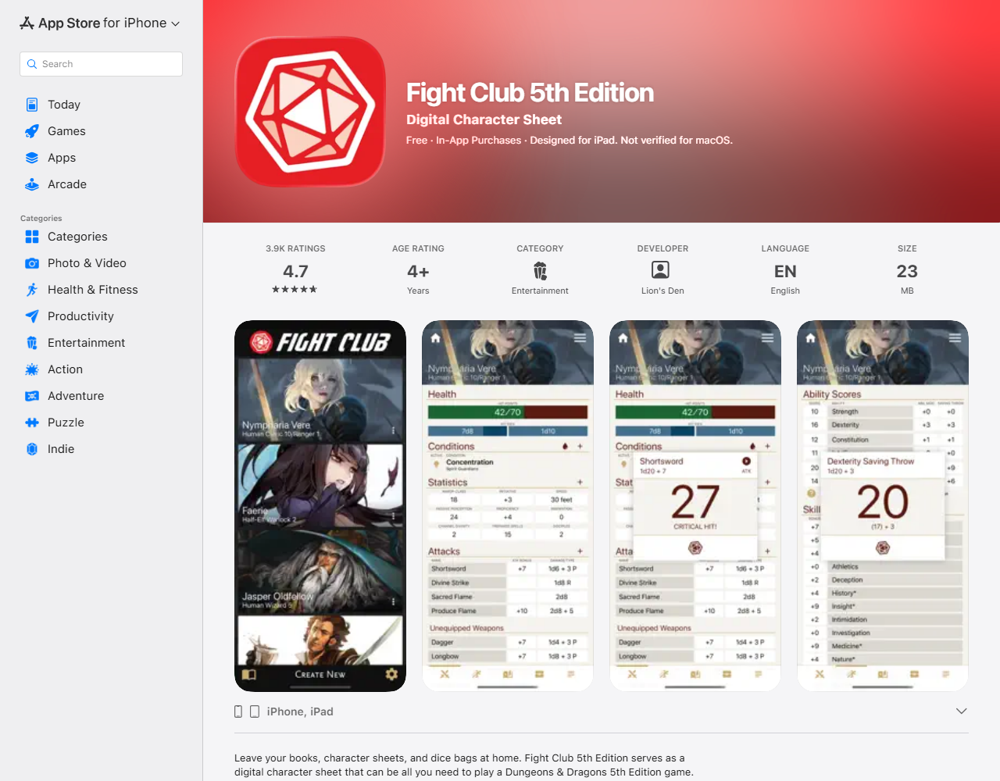
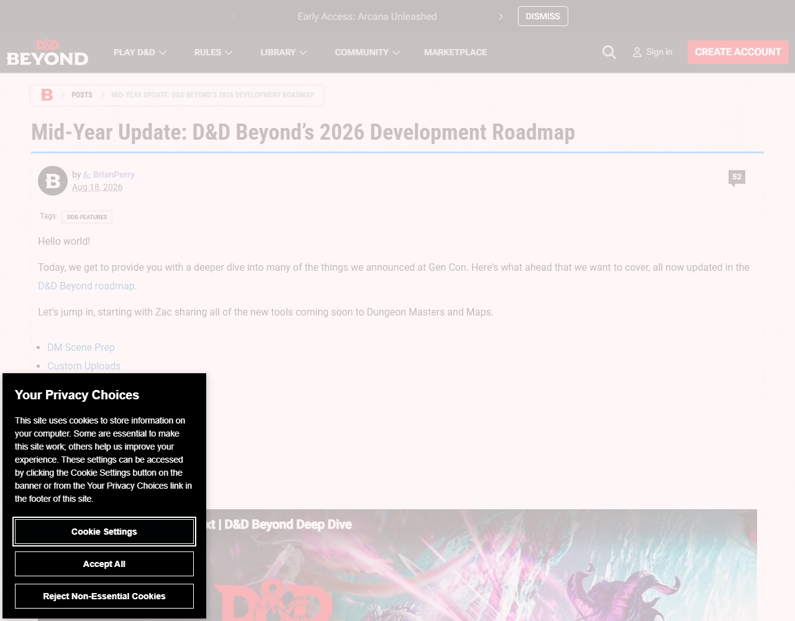
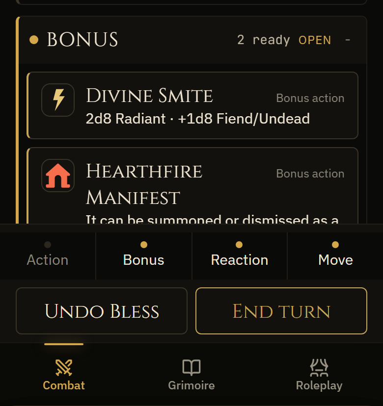
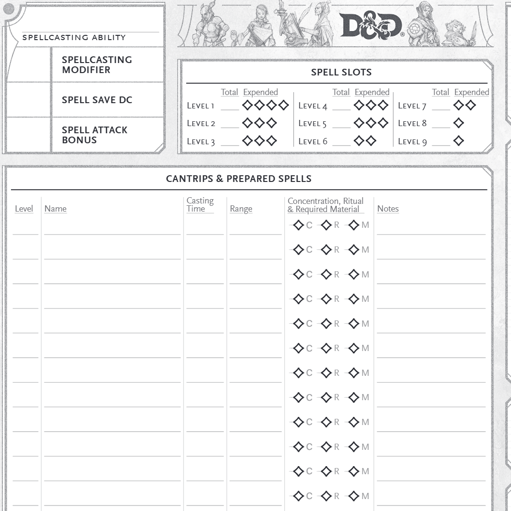

OneVerdict
It is much further along than "half-built". It is pointed at the wrong finish line, and nobody but you can get in the front door.
Of 59 features I could find and drive, 48 work well. The turn screen is the best thing in the building: it reads the 2024 rules properly, counts your Extra Attack, greys out a second levelled spell because the rule says so. Real, tested work, not in danger.
Three things are broken and one is fatal: you cannot make a character unless the app can reach a model over the network. I tried twice; it timed out and saved nothing. Import is the only way in. The app has exactly one possible user, and he wrote it.
So the work isn't rescue. It's finishing, in an order that turns one person's instrument into something a stranger can buy. Eleven milestones, each one run. The first makes your next Friday better; the last two are yours, with four strangers' money as the test.
The direction I'm taking, and the one thing you must agree with, is in §3: this is a practice room, sold once for $29, to the player; not a subscription, not to the dungeon master.
TwoWhat's here
Every number below came from running the app at 390×844 with a copy of your saved character, Nix. The feature-by-feature list is in .codex-owner/notes/inventory.md, a capture for each.






The safety net, built first
Before touching anything I wrote 15 flows and 97 checks that drive the real app in a real browser the way you do at the table: start combat, spend a slot, take damage, roll death saves, reopen it. Plus 5 that your saved character still opens field by field. All pass on untouched code, and from now on a change that breaks them gets undone. It runs on a copy; your original was never opened for writing.
The vault and the Studio
The vault cloned on the second attempt (the first died on 378 MB of audio; the exact error is in notes/vault.md). It holds 20 real sessions of your game. A 499-line importer to read it already exists, with no script and no caller, aimed at a stale 16-session copy. It is wired to nothing, and I left it read-only.
The Studio documents contradict each other and the app: four pricing schemes 0×-16× apart, and the customer is the dungeon master in one and the player in another. Revenue to date: zero, in your own acquisition memo. Users, installs, signups: none found. Not a criticism: nothing has been disproved yet, so we choose.
ThreeThe product
Every other D&D tool remembers your character for you. The Codex is the only one that rehearses you into him: a practice room between sessions, and a six-second instrument at the table.
"The only one" is load-bearing, so I checked it. Of the five products you named plus the two that really hold this job, none has a roleplay, voice or improv feature. D&D Beyond's August 2026 roadmap runs eight sections; roleplay, voice, improv and narration appear in none of them. They all store. Nobody practises.
Who it's for: the player
Specifically the player who is fine at the rules and freezes at the roleplay. The app is already a player's instrument and good at it; the market gap is on the player's side of the table; and you are that player. The counter-evidence is in §6, and it is strong.
The moment someone tells a friend
The dungeon master turns and says your name, and you are already talking.
Nobody tells a friend about a screen. They tell a friend that you were good. Thursday: twenty minutes in the practice room: a scene, an aim, the voice, a line you say out loud. Friday: your turn arrives, the screen already knows what you can do, the mark burns, six seconds, head back up. The tellable thing is that you never looked down for long.
The price: $29, once
This argues with you, so here is the evidence. Every product that does what we do charges once: Fight Club 5e at $2.99, Fifth Edition Character Sheet at $2.99, Foundry at $50 perpetual. The subscription band is $3-$5 a month and already has six occupants. Donations don't fund tools here either: on Patreon, Czepeku sell battle maps to 16,554 paying patrons; Owlbear Rodeo, a working virtual tabletop, has 33.
A subscription is also a promise of ongoing cost, and we have none: no server, nothing that gets dearer as more people use it. Charging rent for a house we don't heat is what killed the last two of these (§6).
Four sales a month clears your $100 goal. At an unverified 3% conversion that's about 133 visits a month, four or five a day, reachable from one well-received forum post. The subscription route to the same money is 20 subscribers at $4.99 who all stay, re-earned every month forever. Worse odds, same money.
So: sell the instrument once, sell the practice repeatedly. The recurring line is accent packs, scene banks, a season of drills, bought when wanted, owned forever, no server. Same shape as the thing with 16,554 patrons. Whether anyone buys practice is untested, which is why milestone 10 is a paid test, not a launch.
FourWhere we win
Two of your nine positions don't survive their sources, and one correction changes who we fight.
The incumbent is not who you think


You told me not to fight D&D Beyond head-on. Half right, and the wrong half matters: it isn't the incumbent for this job; it has given itself another year and committed to no roleplay at all. The opponent we must beat is a $2.99 offline character sheet with 4.7 stars: cheap, fast, trusted, already on the phone. Every milestone in §5 names a comparator on those terms.
Meanwhile Roll20 retired its companion app in February 2026 ("the current experience sucks"), and Foundry says it "does not support mobile devices as part of the core software". The phone, at a physical table, is vacant ground.
Two of your numbers
| Your input | Verdict | What the source actually says |
|---|---|---|
| Hybrid play is 60% | Wrong | The figure is real; the meaning isn't. Wizards' line is that 60% "switch between playing the game physically or online": people who alternate modes, not people using a phone beside a table. Don't use it. GeekWire, May 2023 |
| A giant at 2.12 stars | Wrong | Not true of any candidate you'd have meant. It's Everweave on Google Play only (2.1★); the same product is 4.3★ on Apple. Drop the decimals and name the platform, or it falls over the first time someone checks. |
| Beyond's roadmap | Confirmed | Post #2223, 18 Aug 2026, exactly as you said. Source |
| Sigil as the warning | Confirmed | Both quoted phrases are in Rascal News; the shutdown terms are in Wizards' own notice. |
Your instincts held up better than your numbers. The marks burning, the undo, the cold start are all right, and two are further along than you think. The marks exist and are already cached for offline use; undo works, but is wired to one corner of the screen instead of the thing you mis-tap in the dark.
FiveThe roadmap
Eleven milestones. Each is one run's work, names the code it touches, names the thing it must beat with a saved picture, and carries eight checks. Nine are mine; the last two are yours, by hand. Full text in ROADMAP.md.
| # | What you get | What it must beat |
|---|---|---|
| M1 | Take it back. Mis-tap a slot in the dark, one tap puts it back: every spend, not just reactions. | A pencil and the official spell sheet |
| M2 | Open before you look at it. Cold start under a second, landing on your live turn. | A paper sheet already lying open |
| M3 | A character you can make at the kitchen table. Start to finish in airplane mode, with the scores you chose. | Fifth Edition Character Sheet, $2.99 |
| M4 | Not just Paladins. All twelve classes, so your friends can use it. | Fight Club 5e, 4.7★ |
| M5 | The practice room remembers you. What you write shows up where you rehearse, and practice counts. | The personality box on the paper sheet |
| M6 | Practice with no signal. It works on a bus, in a basement, on a plane. | Beyond's offline story, in its users' words |
| M7 | Rehearse the voice. Twenty minutes Thursday, not fumbling Friday. Nobody else sells this. | Handwritten 3×5 character cards |
| M8 | A log nobody can rewrite. Your table's record is yours permanently, including from us. | Sigil's ending |
| M9 | A stranger can install it. Someone who's never met you is playing in five minutes. | Beyond's player-app first run |
| M10 | Take money from four strangers. Yours. Price it, post it once, stop at four sales or four weeks. | $116 a month |
| M11 | Real tables, real reviewers. Yours. Five tables, one session watched in silence, three reviewers smallest first. | Zero users, zero reviews |
Milestone 1 in full, because it's the one you feel this week



It undoes slot spends, action, bonus, reaction and movement, damage, healing and temporary hit points. It says what it will undo before you press: "Undo Bless", never a bare "Undo". One tap, no scrolling, under 100 milliseconds, still working after a reload. Then two judges who've seen nothing else pick between our screen and the pencil, and ours wins twice.
SixHow this fails
1. The player doesn't open his wallet (the biggest one)
Money here concentrates in the dungeon master. Wizards' then-president told investors most purchases come from DMs, "despite the fact that dungeon masters account for only 20% of the game's overall user base" (CNBC). Three competitors price to exactly that: Foundry ("only one person (the host) needs to purchase"), D&D Beyond (one purchase, twelve players), Owlbear Rodeo ("Perfect for DMs…"). One payer per table; everyone else rides free.
I'm taking that risk deliberately, because the evidence is about buying content, not improvement. Nobody has tested whether a player will pay to get better, because nobody has offered it. Unverified until M10 puts a price on a page. If four strangers don't buy, the answer isn't "market harder"; it's that we sell to the dungeon master, and M5-M7 change shape.
2. The practice market may not exist
No product sells roleplay practice today, so there is nothing to point at. That cuts both ways: Unverified. M10 tests it cheaply, before we build content for it.
3. D&D Beyond ships its player app early
They've said early 2027 and said nothing about roleplay, but they have the licence, the audience and the books. If they ship in-person play well, M2, M3 and M9 stop being differences. M5-M7 still stand: the argument that the practice room is the point, not the accessory.
4. The parts that use AI
Twenty-seven files call a language model. Against your own local model, no keys, no fallback, 21 of 21 features returned a usable, in-character result, in 6 to 26 seconds each. Two failures matter more than that score:
- Character creation failed 2 of 2, timing out past 30 seconds and saving nothing. The one AI-gated path every new user must walk is the one that doesn't work. M3 removes the model from that path entirely.
- The combat advisor told me Burning Hands uses a spell attack roll. It's a saving throw. Its answers aren't checked against the rules the rest of the app already knows. Recorded as a candidate, because nothing at the table should be asking a model anything.
There is a larger risk in it. This hobby's institutions have turned against generative tools: the ENNIE awards ban AI content outright, DriveThruRPG bans AI text and requires disclosure, Foundry requires prepared content to be human-made, Wizards tells its own creatives to refrain, a long-standing D&D artist quit over it, and the Magic Arena team unionised partly over mandated AI usage. You were right, and it is now policy: the pitch never mentions AI, the table never needs it, and every model-backed feature lives in preparation, is optional, and fails gracefully. Where it can't fail gracefully it gets removed, which is what M3 and M6 do.
5. The pattern that ended the last four projects
One person, eleven milestones, a history of half-built things. The defence is structural, not motivational: each milestone is one run with eight checks written before the work starts, and one that fails three times is marked blocked, leaving the app working. The safety net means the 48 things that work today can't quietly stop working while we build the rest.
SevenProgress
Nothing finished yet. This run was for understanding, protecting what works, and choosing a direction. From the next run on, every finished milestone appears here with before and after pictures and its measured numbers.
EightQuestions for you
Five things only you can decide. Each takes one word.
- Approve the roadmap and its order?yes / no / reorder
- $29, paid once, no subscription?yes / no / a number
- Who we build for and price to, if the evidence stays ambiguous.player / table / master
- What name goes on the storefront? The app is "The Codex" and the Studio documents call it "Ash & Archive".Codex / Ash / other
- May I read your vault's 20 real sessions into the app, still without writing to it?yes / no / later
AppendixClaims and sources
Every factual claim on this page and where it came from. Local paths are in the repository.
| Claim | Source |
|---|---|
| 48 features work well, 8 half-built, 3 broken, of 59 found | notes/inventory.md, each with a capture and a code path |
| 2,098 of the app's own tests pass on untouched code | npx vitest run, 11 Sep 2026, in inventory.md |
| Safety net: 15 flows, 97 browser checks, 5 saved-data checks, all passing | tests/safety-net/, npm run test:safety |
| Character creation failed twice, timing out past 30s, saving nothing | inventory.md:735; setup-forge-fail-390.png |
| The practice panel is empty: traits written and read under different field names | inventory.md:592; prep-academy-top-390.png |
| The vault holds 20 sessions; its importer has no caller and a stale target | notes/vault.md |
| Revenue zero; no users or signups found; four price schemes 0×-16× apart | notes/studio.md §3, §6.1 (your acquisition memo) |
| No named competitor has a roleplay, voice or improv feature | notes/field.md; every product's own pages, linked there |
| Beyond's player app is "likely early 2027" and lists no roleplay features | dndbeyond.com/posts/2223 |
| Roll20 retired its companion app in Feb 2026: "the current experience sucks" | blog.roll20.net |
| Foundry "does not support mobile devices"; one host buys for the group | foundryvtt.com/article/faq |
| Fight Club 5e: offline, $2.99 once, 4.7★ from 3.9K ratings | Apple App Store |
| Everweave is 2.1★ on Google Play and 4.3★ on Apple (same product) | Google Play · Apple |
| The 60% "hybrid" figure means players who alternate physical and online play | GeekWire, on Wizards' May 2023 briefing |
| Czepeku: 16,554 paying patrons for maps. Owlbear Rodeo, a full virtual tabletop: 33 | Patreon public counts, 11 Sep 2026; field.md |
| Foundry $50 perpetual; the subscription band is $3-$5 across six products | foundryvtt.com/purchase; ref/SOURCES.md |
| Purchases concentrate in dungeon masters, who are 20% of players | CNBC, on Wizards' investor briefing |
| Sigil: "the video-game-ification of D&D"; content inaccessible after shutdown | Rascal News · Wizards |
| The hobby's institutions have turned against generative tools | Six primary sources, linked in §6 |
| A player will pay $29 to get better at the table | Unverified No comparable exists. M10 tests it. |
| Practice content will sell repeatedly | Unverified Inferred from the Patreon gap, not measured. |
| Creators at Critical Role's level would recommend it | Unverified No path found. No milestone depends on it. |
Every capture, its URL and its fetch date is in .codex-owner/ref/SOURCES.md, including the pages that failed to load and were thrown away rather than kept.